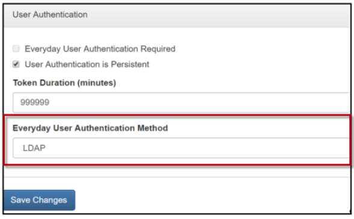
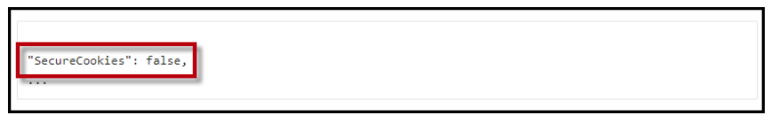

An Everyday User account is required prior to provisioning the EMS Kiosk App. The following authentication methods are supported for the EMS Kiosk App. See Also: EMS Kiosk App Parameters.
Badge
Group Name/Email (Standard)
Group Field (Exact Match)
Badge authentication provides the best user experience and most secure authentication.
If Badge is the Primary Authentication, the Secondary Authentication options are:
Group Field (Exact Match)
LDAP
Group Name/Email (Standard)
For provisioning authentication in the EMS Kiosk App, only LDAP and EMS Native authentication methods are supported.
Navigate to EMS Platform Services Admin Portal > Integrations tab and select the EMS Kiosk App client for provisioning authentication. Then, in the Everyday User Authentication Method field, select either LDAP or EMS Native from the drop-down list.
If selecting LDAP, ensure LDAP is configured per EMS LDAP authentication requirements.
If selecting Native authentication, configure the username and password field in the EMS Desktop Client menu bar (click Configuration > Everyday User Applications > Everyday Users).

User Authentication Section of the Integrations Tab (EMS Platform Services Admin Portal)
Click Save.
This setting controls the authentication method for EMS Kiosk App provisioning only. Everyday User authentication and validation within the EMS Kiosk App is managed per profile per Security Parameter. For more information on Profile Security Parameters, see Parameters Tab.
Clear cache in EMS Platform Services and in the EMS Web App Admin Portal.
By default, the EMS Kiosk App uses secure cookies. We strongly recommend you use this approach in your production environment. However, you might want to test without SSL. To disable secure cookies in your test environment, add the following to appsettings.json inside the "PlatformOptions" section:
